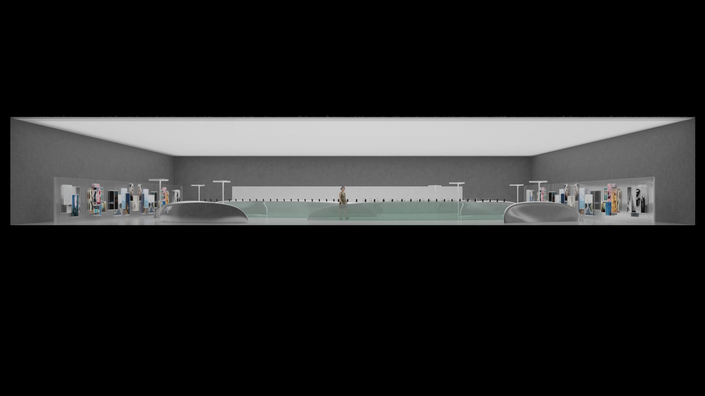

品牌設計
Flagship Store & Shenzhen HQ / 旗舰店 & 深圳总部
ふたつのデザインはいずれもOPPOの品牌遺伝子から出発し、空間形態と建築素材を通じてブランド特質を実体化する。フラッグシップストアは「都市の公園」として、深圳本社は「璞玉」として——それぞれ詩意美学の「軽盈」と「宁静」を担う。
儒家の「本分」と道家の「至美」——この二軸の弁証法的緊張が、フラッグシップの軽やかな曲面と本社の重厚な漆黒を同時に成立させる。
「天地に大美あれど言わず」——荘子。宇宙の根底にある美は沈黙の中にこそ宿る。この一句がOPPO詩意美学の出発点であり、ハイデガー「詩的に住まう」とも合流する。
東西の哲思が合流し、現代の焦虑を超越して静謐に帰する究極の状態を指向する。この洞察が旗舰店の曲面と本社の漆黒の根拠となっている。
上下スクロールで移動